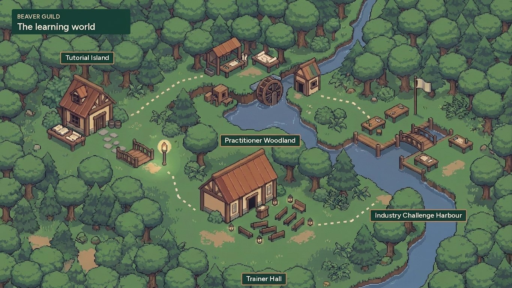
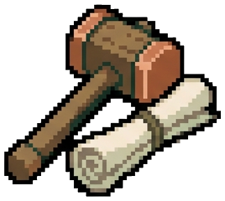
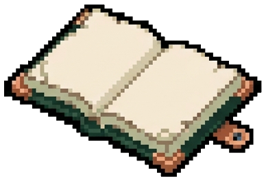
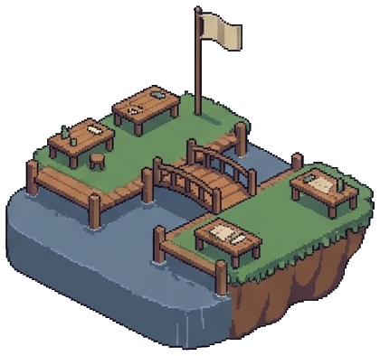

Practical learning and trainer development for AI and technology through apprenticeship.
Everyone starts together on Tutorial Island, then follows one of two pathways: practitioner or trainer. Starting with Notion, hands-on work, real problems and mentored teaching sit at the centre.

A workshop can be a starting point, not the whole journey.
People need space to practise, apply what they know and get useful feedback. Those who want to teach need something more: opportunities to help real learners, reflect on their delivery and improve with support.
Read why Beaver Guild existsOne shared start, two ways to grow.
Everyone starts together on Tutorial Island. After the shared showcase, choose a primary pathway and add the other when you are ready.

The shared learning path
Foundations, Notion AI and agent-assisted workflows, then design thinking and applied building, ending in a showcase of your working build.
 Route A · Practitioner Woodland
Route A · Practitioner Woodland
Practitioner pathway
Develop practical skills and apply them to meaningful problems.
 Route B · Trainer Hall
Route B · Trainer Hall
Trainer pathway
Build on that capability through supporting, co-teaching and supervised delivery. Becoming a trainer is optional, not a requirement for belonging.
Three areas of practice.
Foundations
Understand the building blocks and create clear, usable systems.

Agents
Build and test AI-supported workflows, with attention to their limits.

Design thinking
Frame problems, prototype solutions and learn from feedback.
Progress you can demonstrate.
Our approach separates completing learning activities from demonstrating capability. Assessment details will be shared before enrolment.

Put the learning to work.
Planned industry challenges and buildathons would give ready participants a place to collaborate on real problems and demonstrate their solutions. These are learning and prototyping opportunities, not promises of production deployment, employment or teaching approval.
How industry challenges would workInterested in helping shape the first pathway?
Whether you want to develop your skills, work towards teaching or explore an industry challenge, start with a conversation about what you want to achieve.
Express interest